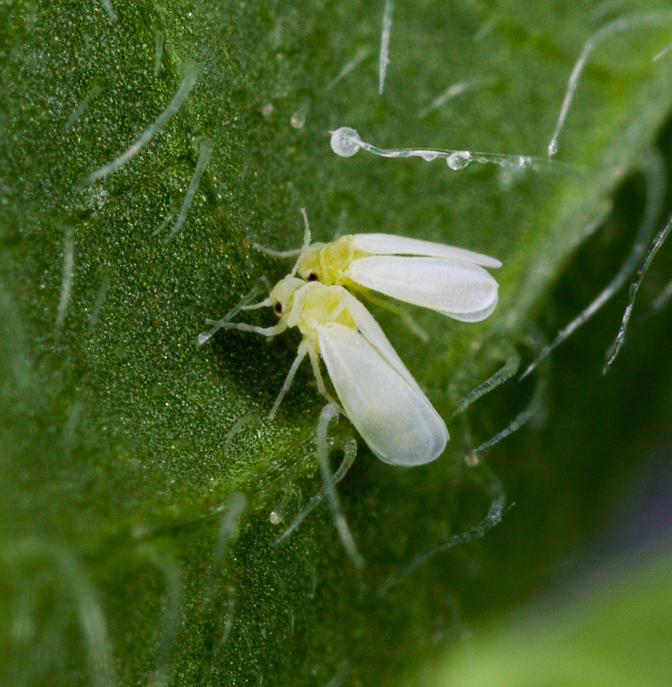
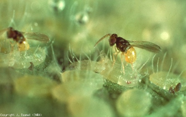

|
Bemisia tabaci (Gennadius) (Hemiptera:
Aleyrodidae)
|
|
|
Descripción:
|
|
La mosca blanca (Bemisia tabaci Gennadius) es una plaga común en muchos
cultivos, incluido el
tomate. Generalmente, la mosca blanca puede aparecer en diversas etapas
fenológicas del cultivo de
tomate, desde la siembra hasta la cosecha.
|
| Etapa de Germinación |
| SINTOMA |
SIGNO |
|
|

|
|
| Descripción: |
|
El primer estadio es movil,Se mueve a un lugar adecuado para
alimentarse en la superficie inferior de la hoja,
generalmente en hojas maduras
|
El adulto perforar los tejidos vegetales y succiona la savia.
|
Provocando un tono amarillo en las hojas
|
CONTROL QUÍMICO
Para un control eficaz de la plaga se recomiendo integrar los siguientes
controles:
| Descripción |
- Ingrediente activo: Aletrina
- Grupo químico: Piretroides
- Mecanismo de acción: Actúa sobre el sistema nervioso
paralizando los insectos
- Estructura Química:

- Formula química: C19H26O3
|
CONTROL BIOLÓGICO
|
Encarsia formosa GAHAM

|
- Orden: Hymenoptera
- Familia: Aphelinidae
- es un parásito de la mosca blanca de los invernaderos muy bien
conocido y comúnmente empleado
- Parasita: parasita las larvas de la mosca blanca
- Mecanismo: la hembra adulta busca larvas de mosca blanca para
depositar sus huevos dentro de ellas. Una vez eclosionados, los
huevos de Encarsia formosa se convierten en larvas que se alimentan
del interior de la larva de la mosca blanca, causando su muerte.
|
|
Bacillus thuringiensis var. Kurstak
|
- Clase: Arachnida
- Familia: Phytoseiidae
- Es un ácaro depredador
- Mecanismo: se alimenta de los huevos y estadios de la mosca .
|
CONTROL CULTURAL
Uso de trampas cromotrópicas, particularmente las trampas amarillas adhesivas, que
atraen a estos insectos y son útiles para la detección temprana. Se recomienda colocar
una trampa por cada 200 metros cuadrados de cultivo, a una altura de aproximadamente 30
cm sobre las plantas, concentrándose en áreas cerca de las puertas y los bordes del
invernadero.